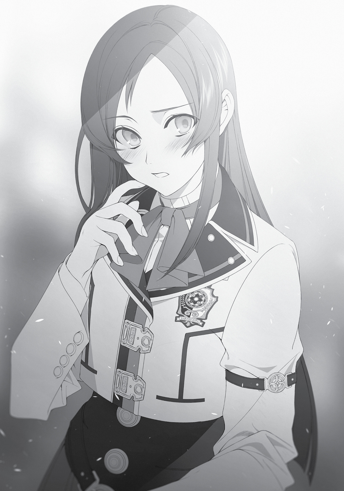

Chapter 11:
Three Heads Are Better Than One
A WEEK HAD PASSED since we took Nanahoshi under our protection, and the worst of it seemed to have passed. She was eating, albeit only a little. If prompted, she would take a bath—and get back out without drowning herself.
The ambition I’d previously sensed in her was gone. It was as if the strings that were holding her up had been cut. She suddenly felt as fragile as porcelain and lacking in agency, like those women in adult videos who got deceived by yakuza and conned into selling their bodies.
I couldn’t leave her alone. I also had to be careful not to let her run into anyone like Luke. The only thing I felt from her right now was a sense of resignation. The failure of that experiment had really hit her hard.
I’d never experienced a setback of that magnitude before. The closest was when I spent several years as a no-lifer in an online game, only for my data to be erased. The moment I saw that my login was invalid and got the email notifying me that my account was banned, my heart started pounding violently. I spent the entire day unable to process anything. I took my objections to the management and protested vehemently, but in the end, I went to sleep crying. For the next month I felt no motivation to do anything. I then swore I’d never again get invested in another online game.
Nanahoshi’s experiment wasn’t the same as an online game. Her objective was to return to her world. If she gave up on that, I was afraid she wouldn’t be able to go on living. I tried my best to encourage her, but she was just in a daze the entire time. I didn’t even know if she was listening to what I was saying.
But just as I started to doubt that she was…
“I thought I’d covered everything,” she blurted suddenly one day.
Instead of responding, I just listened.
“A magic circle is basically like what we called a circuit board in our world. You create a single function by combining several circuit patterns. However, one part would not connect, no matter what I did. No matter how I changed the wiring, one part wouldn’t connect with the rest. I tried forcing it, but then a defect would appear elsewhere.”
In order to connect this unconnectable circuit, she’d had to nearly double its size. Then, to compensate for the resulting distortion, she’d patched in another circuit. But still, that one defect remained in her magic circle. Try as she might, she couldn’t figure out what was wrong with it—just that one section that wouldn’t connect.
“It’s physically impossible. That means there’s no way for me to return home.”
Though it appeared flawless, the magic circle was something she’d pieced together with years of painstaking work. At a glance, it seemed like a problem that was ultimately solvable, if tremendously complicated. But the mysterious defect suggested otherwise.
“It’s hopeless,” Nanahoshi said as she flopped facedown on the bed.
I headed out to her research room to recover the diagram of her circle. Her spiel had jogged something in my memory, but I didn’t want to excite her prematurely. First, I would confirm whether anything could be done or not.
The next day, I called Cliff and Zanoba to the research room. People said three heads were better than one, so I was going to use the power of three geniuses’ brains. Since I’d summoned Cliff, Elinalise had naturally tagged along. She seemed to frequent his research room, but what about her classes? At this rate she’d be lucky if she weren’t expelled.
“It’s hard to believe someone like Silent is in that kind of state. She just seemed like she was made of tougher stuff,” Elinalise mused.
“Truly strong people don’t close themselves off from the world and bear all their burdens on their own.”
“Well, I suppose that’s true.” Elinalise shrugged. Despite her prolific social life, she hadn’t interacted much with Nanahoshi. And, though she didn’t look it, she was skilled at handling younger women. It might be a good idea to enlist her help in getting Nanahoshi to take a breather.
“Now then, the two of you. First, take a look at this.”
When I showed them the diagram, Cliff immediately scowled. “That’s a messy circle.”
Messy? That was an interesting way to put it. “There are messy and neat circles?” I asked.
“Of course there are. You have to keep your circles neat and small when creating magical implements. I would’ve drawn this much more neatly. For instance, if you connected this part here to this part over here, you could make it look much cleaner.”
“Mm-hmm,” I said. Critiquing someone else’s work was easy. If we did as he proposed, it would probably just create other defects in the circle.
“Ah, but the idea is amazing. I’d never think to loop this part right here. Oh, I see. The reason this part is so complex is because of this here…” Cliff looked at the circle and started mumbling to himself. “This here, that there… Maybe I could make more sense of it if I’d paid more attention to my theory…”
“So, Master, what kind of magic circle is this?” Zanoba asked.
“This is what Silent was studying—summoning circles. But she’s gotten a little stuck, so I wanted to get your input to help her.”
Zanoba tilted his head. “But summoning magic is out of our realm of expertise, is it not?”
“Well, if we can’t solve the problem, so be it.”
I just figured that we might be able to come up with something as a group that Nanahoshi hadn’t been able to on her own. In fact, it was precisely because we were all experts in such different fields that we might be able to come up with an alternative approach.
“Anyway, please look at this section. This is apparently where the circle disconnected. See?” I pointed to the tear in the paper that appeared during the experiment.
“Huh? Oh. This is where it’s disconnected? I didn’t even notice. This circle is incomplete then, huh? Umm, so the part that should connect to it is…here?”
Cliff was surprised. Despite being a self-proclaimed genius, he apparently hadn’t noticed that right away. Well, that’s just how things go, I thought. “Do you have any ideas for how to connect this circuit?”
Cliff folded his arms and fell into thought. He started mumbling “here” and “there” to himself. He produced a memo pad from his breast pocket and started scribbling down various things. “This is a challenging problem. Maybe if you redrew the whole—no, but then… It’s impossible.”
“Wouldn’t it work if you used a multi-level structure?” Zanoba interjected.
Cliff looked doubtful. “A multi-level structure? What are you talking about?”
“With the doll I’m researching, there’re several layers of magical circles combined together to produce a single effect. That said, I have only just begun my research, so I’ve never even drawn a proper circle yet myself, but…”
“Wait, doll? You mean the one from before? Let me see.”
“Master, is that all right with you?” Zanoba asked.
“Yeah, of course.”
Zanoba fetched us a sliver of the doll’s arm. Cliff studied it with great interest before declaring, “The person who created this was a genius!”
It had to be remarkable if someone as self-important as Cliff said that.
“I’ve never seen a magic circle like this before,” he continued. “Grr, I have no idea what the mechanics behind this are. Are these two magic circles, one on top of the other? No, that’s not it, there’s more than that. It couldn’t move properly without all of them together. But it was still able to move even though it was broken. Why? Dammit, what the hell is with this circle?!” Cliff gritted his teeth in frustration. Almost like Vegeta witnessing Goku’s power level—it was over 9,000!
“I don’t know all the details yet myself, but, according to the book, this circle apparently controls the movement of the elbow.” Zanoba answered Cliff’s question so casually that the latter looked as if he might burst into tears.
Elinalise rushed over immediately and pulled his head into her breasts, stroking his hair. “There, there, you’re a genius yourself, Cliff. You would be just as knowledgable had you researched the matter yourself.”
“I-I know that!” His face went red as he regained his composure.
Perfect, Elinalise. I knew I could count on you. But can you save the bedroom stuff for later? We’re kind of busy right now.
“Master Cliff. If we used the same technique that was used for the doll, do you think it would solve Silent’s problem with her circle?”
“No clue. But it’s worth a shot.”
It was a lead, at least. Nanahoshi had only ever drawn her circles on a single flat surface. Perhaps she’d never thought about layering them or folding them. Then again, maybe there was a reason she hadn’t tried that yet. I prayed it was the former, and that it would be enough to motivate her once again.
***
The next day I took Nanahoshi with me to her research room. I’d spent the previous day putting the unkempt room in order, and it was in those premises, clean and yet still disorganized somehow, that Zanoba and Cliff awaited us. The two of them were looking through the research data that Nanahoshi had collected over the years.
Seeing them, Nanahoshi just snorted derisively. “What’s this? Did you bring me here so you could all ravish me?”
Really? Just how far down the path of self-destruction had she gone? All because she’d failed once? Well, I guess it did only take a single big failure to disrupt a person’s entire life.
“How dare you?! I’m a devout follower of Millis!” Cliff was indignant. The Millis faith’s tenets regarding chastity were similar to those of Christianity’s. Monogamy, no adultery, etc. etc. Very austere.
“If you say so.” Nanahoshi just drifted unstably and took a seat. Then she slumped back in her chair.
“Master Cliff, Zanoba, let’s just talk about what we came up with yesterday.”
Nanahoshi listened with disinterest as I showed her a version of her circle that Cliff had corrected with red pen. Then Zanoba’s proposal of multi-level structures based on his research. And finally, the idea I’d come up with: three-dimensional circles. She listened to it all without a hint of emotion on her face, sitting perfectly still as if she were frozen.
Then our gazes met. It wasn’t that she was disinterested. She was just expressionless, concentrating.
“Ah.” Nanahoshi suddenly spoke. “It might work,” she mumbled. Then she leaped out of her seat. “So that’s it, that’s what it is. There was no reason for me to get so caught up in drawing on a flat surface. That makes sense, of course. Putting it on paper will provide depth. If I layer those papers, I can make as big of a magic circle as I want. Why couldn’t I think of such a simple thing so much sooner?!”
Nanahoshi anxiously paced around the room three or four times. She took pen and paper from her desk and began to draw. She would write something that looked like a formula, quickly erase it, then start again. “Urgh, no! This isn’t it!”
“Hey, isn’t this what you mean?” There went Cliff, blissfully unaware, inserting his head into the cage of the bear that was Nanahoshi. He’d produced a red pen out of nowhere and annotated her memo. That’s our Cliff, I thought sarcastically. The air in the room changed for the better and he, of course, still can’t read it.
“Oh, so that’s it. You’re pretty clever,” she commended.
“Of course I am. I’m a genius.”
“Then how about this? What should I do here? I’ve been unsure about this part for a while.”
“Uh, hold on a sec.”
Cliff and Nanahoshi…were working well together. They stood shoulder to shoulder, jotting things down on a sheet of paper. I glanced at their work, but it just looked like a child’s scribbles to me. “Zanoba, do you get what they’re doing?”
“They’re far beyond my understanding.”
The two of us had been left out in the cold. Still, Cliff sure was amazing. It hadn’t been that long since he first began researching magic circles himself. Well, whatever. Nanahoshi seemed to be in good spirits. Even if she didn’t succeed this time, at least she had a foothold once more, and reason to hope.
“Sorry, Zanoba, but I’m going to have to ask you to stay and watch these two.”
“Where are you going, Master?”
“I’m going to get Elinalise. She wouldn’t like her man getting so cozy with another woman when she isn’t around.”
I could hear the excitement in Nanahoshi’s voice as I left the research room. It was the first time I’d ever heard such emotion from her.
***
A week later, Nanahoshi had completed her magic circle. She consulted with Zanoba and Cliff to fix the problems in the previous version, and with their input, recreated the underlying mechanism. In a magnificent display of intense concentration, she finished the circle in a matter of days. She glued together five layers of paper, creating a magic circle that looked as if it were made of cardboard.
“Now then, let’s begin.”
As Cliff and Zanoba looked on I began pouring my mana into the circle.
The circle began to emit a vibrant light that illuminated the room like it was noon. As the mana flowed from me, something gradually began to take shape in its middle. Once the light dissipated, we could see the object from another world that we’d successfully summoned.
It was a plastic bottle. One with no label or cap. A simple plastic bottle.
“Ooh, most impressive.”
“What the heck is this? Glass? No, it’s softer than glass.”
Zanoba and Cliff couldn’t hide their excitement at seeing a 500ml plastic bottle for the first time. Elinalise and Julie also peered at it with intense interest. Nanahoshi looked at what she’d summoned, clenched her hand into a fist and let out a barely audible, “Yes, I did it.”
A plastic bottle. It was both insignificant and significant at the same time. In that brief moment, our previous world became undeniably connected to this one. We’d brought over an inanimate object, and an incomplete one to boot, but still…we’d brought something to this world that had not previously existed in it.
“You succeeded,” I said to Nanahoshi.
She nodded firmly, looking truly pleased with herself. “Yes, I did. Now I can finally move on to the next step! As I probe deeper into layered magic circles, I should be able to summon just about anything. If I can organize the circle better, then by just changing out two or three of the layers, I can most likely …”
Nanahoshi suddenly snapped back to reality. She averted her eyes, looking a bit awkward. “Sorry. F-for causing you so much trouble.”

“It’s give and take, right? Next time I’m in a bind, lend me a hand, okay?”
“I-I’d already planned on that.”
Suddenly I noticed Elinalise staring. “You two sure are close, huh?”
“You’re always quick to assume a love affair, Miss Elinalise,” I replied.
“Well, you are a man and a woman. But it’s not very appropriate.” Her eyes looked like those of a reproachful mother-in-law.
I had no intention of cheating. Plus, Sylphie knew what we were up to.
Nanahoshi voluntarily put some distance between us. “That’s right, you are newly married. Wouldn’t be good if your wife misunderstood.”
Elinalise laughed cheerfully, wrapping her arms around Nanahoshi’s shoulders. “Heh heh, there’s no need for you to worry over that. Ah, I know! Let’s go to the pub today! It’ll be your treat, of course!”
Nanahoshi smiled wryly at Elinalise’s proposal. “I guess I have no choice. But that makes me even with all of you, then.”
“Sounds wonderful, wouldn’t you agree, Cliff?”
Cliff, who’d been crumpling the plastic bottle in his hands, looked back at us. “Huh? Yeah, sure! That makes us even. But you’re pretty exceptional yourself, so I wouldn’t mind you helping me out with my own research next time!”
Elinalise giggled.
And so our group headed to the pub that afternoon. For some reason, Linia and Pursena joined us as we were making our way through the school building, saying things like, “We don’t want to be left out,” and “Take us along too, mew.” How in the world had they managed to sniff us out?
As our little congregation filed outside, Ariel stopped to ask what we were doing. When I explained the situation she said, “Then I should have someone chaperone you,” and sent Sylphie along. Clearly “chaperone” was an excuse and Ariel was just being considerate. By the time we made it out the school gate, Badigadi had joined us at some point and was hanging out at the very rear of our group. No, seriously, just when had he snuck in here?
On our way, we stopped by the Magicians’ Guild, where Nanahoshi went to withdraw some money. She was apparently using it as a bank, and had an impressive amount stashed there.
The pub we selected was one of Badigadi’s favorites. Despite the early afternoon hour, there were other patrons present. Nanahoshi didn’t pay that any mind, however. She went to the counter and slammed down her bagful of gold. “Reserve the whole place for us,” she said.
“Huh? Are you serious?”
Seeing the barkeep looking flustered, Badigadi cut in. “Hold on there.” He took out a bag of gold from his own pocket and slammed it down. Now there was twice the amount. “It’s a day of celebration! Let all those who come this day enjoy their alcohol free of charge!” he declared. The man sure had a dignified presence about him. Just as one would expect of a king.
He’s my idol! I want to be him! I thought inwardly, mimicking the lines of a certain pair that idolized an infamous, immortal blond vampire from a popular manga series.
Acting as if it were the most natural thing in the world, Badigadi planted himself at the biggest table in the pub. There he demanded, “Bring all the food you have on your menu!”
Once in my life, I wanted to try using that line myself. Since I wasn’t the one paying, I was fine with him ordering whatever he wanted, but were the twelve of us really going to be able to eat all that food? Ah well. I was sure it’d be fine.
When the first of the food was delivered, the Demon King stood and said, “Now then, what are we celebrating today?”
“The success of Silent’s research,” Elinalise helpfully cut in.
“All right. Well then, Silent, stand up. You must give your commencement speech.”
Coaxed to her feet, Nanahoshi rose. She looked reluctant. “Thanks for today.”
“Okay, now cheers!”
“Cheers!”
And thus the celebration began, not unlike that of the wedding celebration we’d had not so long ago.
***
It was an enjoyable party. When good things happened, people made merry and drank. I’d never participated in a gathering like this in my previous life, not even once. Even in this world, I’d only done it a couple of times. When I was an adventurer, I did occasionally drink alongside the parties I worked with, but I always had a sense of cynicism about it. I thought only fools got drunk, noisy and wild. I would tut inwardly at their lack of consideration for those around them. But now that I was in the fray myself, I finally understood how those people felt. Sometimes, I thought, you just needed to let loose and have fun.
My belief in that felt especially justified as I looked at Nanahoshi, who was stroking Linia’s ears as she sang anime theme songs in Japanese. If you didn’t occasionally cut loose and forget your troubles, you wouldn’t be able to go on. Life was full of pain, after all. If you didn’t try to find the good where you could, you’d crumble. Elinalise and Badigadi probably knew that better than any of us, given how long they’d lived.
Sylphie and I were going to drink to our hearts’ content today. We never drank at home; it just wasn’t something either of us was used to. And—although it had nothing to do with why we didn’t drink at home—I finally understood just how bad a drunk Sylphie really was.
No, it wasn’t that she was bad. She wasn’t bad at all. She was just the clingy type of drunk.
“Hey, Rudy, pat my head.”
“Okay, okay. Good girl.”
“You can eat my ears too, you know?”
“Don’t mind if I do.”
“Ha ha, that tickles.”
When drunk, she turned into an unbelievably adorable creature. It was phenomenal. I was going to have to approach her about drinking more often. Ah, but her behavior made me worry about her drinking by herself. Maybe I should tell her not to drink outside our house, but then I wondered if that would be too controlling of me.
No, that doesn’t matter, I decided. She was mine. What was wrong with doing whatever I wanted to something that belonged to me?
“Rudy, hug me?”
“Yes, yes, I’m going to hug your hips tight.”
“Hee hee. I’m so happy.” The way she laughed sounded so naughty somehow. Ahh, just thinking about going home with her and making love to her made me feel like I understood why the world was so full of love songs.
“Rudy, um, you know what, lately, well, I’ve been feeling jealous.”
“What, seriously? Of whom? I won’t go near them anymore. I’ll completely cut ties.”
“Actually, it’s Mister Ruijerd. You told me about him recently, remember? When you talk about him you just look so…you know?”
“Yeah, but I just really look up to him. Please try not to let it get to you.”
“I don’t like it. I only want you to only pay attention to me!”
That wasn’t what she’d said when I told her about Ruijerd. This must be how she really felt. I always thought it was scary how she seemed to accept everything with such perfect equanimity, but maybe it only seemed that way because she worked hard to make it so.
Just as I pulled Sylphie onto my lap and the two of us started to fool around, Nanahoshi came over. She was drunk and trying to pick a fight. “So sweet I could puke. Knock it off already. Do you even know how many years I’ve been without my boyfriend?”
Was she already done singing? I’d be happy to sing a duet with her. As long as she picked a fairly mainstream song, I would probably be familiar with it. Then again, it might be that generational gap all over again.
“At least go somewhere people won’t have to look at you if you’re going to make out.”
“C’mon, don’t be like that. They’ve got alcohol here. Let’s have some fun together.”
“Besides, I’ve been wanting to say this to you for a while now. Even from inside my room—smooch smooch, creak creak. What the hell is marriage anyway? Huh? What is it? I mean it’s fine, whatever. But what the hell? There I was, totally down in the dumps, and you two were having sex. I could even hear your voices echo at night, god—eek!”
Badigadi suddenly lifted Nanahoshi into his arms. “Bwahaha! Come along! Today you will sing me your bizarre songs!”
“They’re not ‘bizarre;’ they’re popular in my world!”
“How very interesting! I know not what world it is you come from, but sing them for me! Go on then, sing as much as you can!”
“Hold on, I have something to say to Rudeus first!”
“Bwahaha! You are better off singing if you have nothing nice to say to the man who helped you! Now, sing!”
“I was just leading into what I really wanted to say!” Nanahoshi barked in protest.
She probably wanted to express her gratitude. Still, I only did what anyone would do for a friend in trouble. She didn’t need to thank me. Besides, she had to have quite the social status to warrant being kidnapped by a Demon King. It was almost as if she were the princess of some kingdom. That is, if said princess had been carried off to a pub instead of a cell. And there was always a stage in a pub.
After a bit, Nanahoshi began singing. An accompaniment joined in belatedly. At first, I thought maybe a troubadour was here, but it turned out to be Badigadi holding the instrument. I didn’t know he could play. Also, he’d asked her to sing for him and yet he was performing alongside her? I definitely didn’t understand him.
All that aside, it was a familiar song. I couldn’t quite place where it came from…ah, that’s what it was. “Gandhara,” the ending theme to the TV series Monkey. That definitely wasn’t something I’d expect her generation to know. Then again, it was pretty famous, though.
That said, she sucked. Badly. Horribly. Maybe it was because she wasn’t syncing with the accompaniment. Nah, they both sucked and that was why they couldn’t even sync up with one another.
Still, they seemed to be enjoying themselves. Besides, Nanahoshi was the star of our group today. It was fine if she was terrible. Even though her song was awful, it still conveyed her feelings.
Did she really want to go home that badly? That was something I couldn’t understand. My country of love was right here.
Even so, it was an enjoyable party. We should do it again sometime.
***
The party came to an end when its star, Nanahoshi, got completely tanked. Linia and Pursena carried her off to their dorm room, where they were apparently going to have a sleepover. The rest split off into groups. The heavy drinkers decided to visit a different pub for another round.
Sylphie and I opted to return home. In her drunken state, she giggled and clung to my arm. Her legs were a bit unstable, so I kept an arm around her waist to support her, suddenly gaining insight into how playboys felt when they went on group dates and knew they were going to score.
Of course, I had no such impure thoughts—though that would change once we got home.
“Rudy, isn’t it kind of noisy?” Sylphie said suddenly.
“Hm?” Now that she mentioned it…
I strained my ears. I could hear the sound of someone banging on something, and voices arguing. Sounded almost like when cats fought. As we approached our house, we saw a group standing at the door, noisily banging on it. From afar, all I could see were their silhouettes. Some neighborhood brats, maybe, or thieves of some sort.
My mind was still muddled from the alcohol, but I activated my demon eye to be safe. Sylphie slapped at her cheeks and, though still unsteady, stood on her own two feet. “Rudy, I’m going to detoxify us.”
“Got it.”
Sylphie voicelessly cast detoxification on me, and I could feel the alcohol inside me evaporate. It didn’t completely sober me up, but my head felt clearer. Careful to make sure our would-be thieves didn’t spot us, I crept quietly toward them. That’s when I heard their voices.
“The whole reason it got this late was because you got us lost, Norn!”
“Same goes for you, Aisha. You’re the one who said it was definitely that way.”
“Besides, we don’t even know if this is really the place or not! What are you going to do now? All the inns are already closed! Now we’re going to have to make camp outside in the cold!”
“I don’t like this either, but you’re the one who said we’d stay at his place, so we didn’t need a room today. I didn’t want to stay at his house, but you forced me to come along—”
“That’s because we told Ginger we’d be all right! Getting a room after that would be stupid!”
“You’re always like that, always acting like you’re better.”
Screeching voices. Children’s voices, ones that sounded a bit familiar to me. And in the midst of their exchange, I heard names that I knew. Then finally…
“Both of you, calm down. This is definitely the place. There’s a familiar presence here.” A composed man’s voice. The instant I heard it, a whirlpool of indescribable emotion rose within me.
I let out a sigh of relief and stepped in front of them.
“Ah!”
“Big brother!”
My two little sisters, who’d both grown considerably, stood dressed in matching arctic outfits in different colors, like the characters from Ice Climber. Norn Greyrat and Aisha Greyrat. The one with a complex expression on her face was probably Norn and the one with a look of fierce determination was probably Aisha.
“Big brother, I missed you!” Aisha came flying at me, wrapping both arms and legs around my torso like a little monkey. She rubbed her cheek against mine. Her skin felt cold, though I might just have been warm from the alcohol. “Ooh, you feel so warm! And you stink of alcohol!”
“And you’re making me cold. Please let go.” As I peeled Aisha off of me, I looked over at Norn, who had her lips firmly pursed. She dipped her chin in greeting.
“You drink alcohol?” she asked.
“Yeah, we had a bit of a celebration.”
She looked perturbed, and I didn’t think it was just because she was shy. Paul had mentioned she wasn’t my biggest fan…
Then, behind Norn was…
“It’s been a while, Rudeus,” said the bald man with a scar on his face. A proud warrior wielding a lance. Looking no different than I’d seen him last, three years ago.
“It has been a while, Mister Ruijerd.”
I was hit with a wave of nostalgia, remembering the days we traveled together, just the three of us. How we met, how we parted. What I should say? While I was searching for words, Ruijerd suddenly looked behind me. “I heard at the Adventurers’ Guild that you’d gotten married, but…I see it wasn’t to Eris.”
The person he was gazing at was Sylphie. Her expression turned to surprise, but she quickly bowed. “Um, Rudy, for the moment, why don’t we invite them inside?”
“Oh, yes, that’s right. Come on in.” I unlocked the door and gestured them in.
It had barely been a month since the letter arrived. They were here much, much earlier than I’d expected.